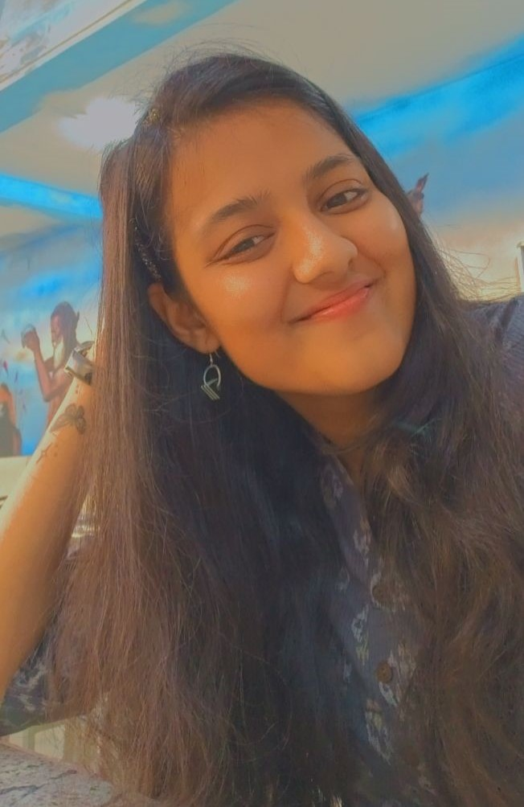

My name is Muskan Bajaj. I was born and brought
up in Kolkata, India and I'm currently pursuing
BTech in Computer Science and Engineering at
Kalinga Institute of Industrial Technology
(KIIT), deemed to be University, Bhubhaneshwar,
India. Apart from coding, designing websites and
obviously studying for my examinations, I have keen
interest in reading all kind of fictional books.